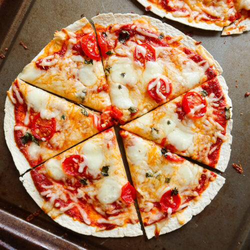

This tortilla pizza is extremely easy to make. It is light enough to be a snack, serves well as an appetizer, or is so good that it can be devoured alone!
You can use any sort of topping variation. The one below is the classic way I usually prepare it but feel free to experiment.
Ingredients
- 1 (8 inch) soft flour tortilla
- 1 teaspoon olive oil
- 1 pinch garlic powder
- salt and ground black pepper to taste
- 1 cooked chicken breast, sliced
- ½ green bell pepper, chopped
- 2 green onions, finely chopped
- ⅓ cup shredded mozzarella cheese
- 1 pinch dried oregano
Steps to follow
- Preheat the oven to 400 degrees F (200 degrees C).
- Place tortilla on a baking sheet. Brush with olive oil; sprinkle garlic powder, salt, and pepper on top.
- Bake in the preheated oven until golden, 3 to 5 minutes. Remove from the oven and spread tomato sauce on top; arrange chicken breast, green bell pepper, and green onions over tomato sauce. Sprinkle with mozzarella cheese.
- Bake in the preheated oven until cheese is melted, about 5 minutes. Sprinkle oregano over cheese. Slice pizza into wedges using a pizza cutter.